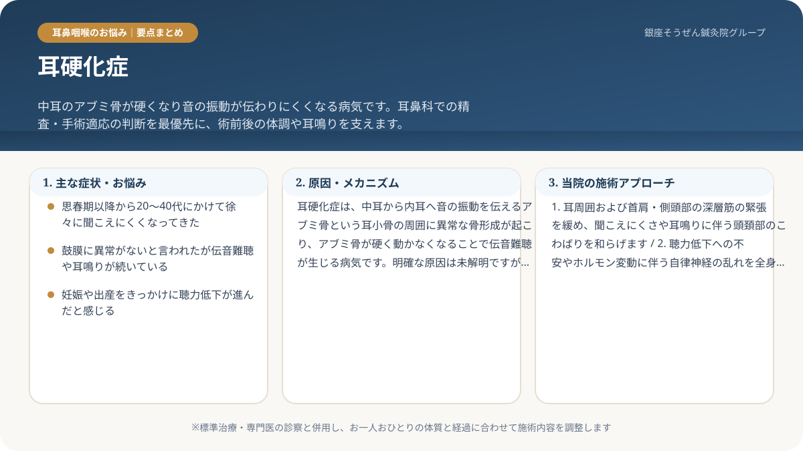

耳硬化症の鍼灸
中耳のアブミ骨が硬くなり音の振動が伝わりにくくなる病気です。耳鼻科での精査・手術適応の判断を最優先に、術前後の体調や耳鳴りを支えます。
まず知っておきたい要点と改善の流れ

耳硬化症は、中耳から内耳へ音の振動を伝えるアブミ骨という耳小骨の周囲に異常な骨形成が起こり、アブミ骨が硬く動かなくなることで伝音難聴が生じる病気です。明確な原因は未解明ですが、遺伝的要因、女性ホルモン（妊娠・出産・閉経期の影響）、免疫系の異常などが関与すると考えられています。鼓膜に異常が見られないため感音難聴と誤認されることもあり、耳鼻咽喉科での精密検査と手術（アブミ骨手術）や補聴器の検討が最優先です。
このようなお悩みはありませんか？
- ✓思春期以降から20〜40代にかけて徐々に聞こえにくくなってきた
- ✓鼓膜に異常がないと言われたが伝音難聴や耳鳴りが続いている
- ✓妊娠や出産をきっかけに聴力低下が進んだと感じる
- ✓手術や補聴器を検討しながら耳周りの不快感や緊張も和らげたい
当院の施術アプローチ・改善の流れ
なぜ鍼灸で改善へ向かうのか？（作用機序の図解）
耳硬化症に対する鍼灸は、耳周囲・頸部の微小循環改善と聴覚・粘膜調整機序を通じて、お体本来の回復力を引き出します。

翳風・風池・合谷など、耳鼻咽喉領域の神経・血管と連動する経穴へ繊細にアプローチします。
首・顎まわりの深層筋緊張を緩め、内耳や粘膜周囲の滞った血流とリンパ循環を促します。
ストレスや睡眠不足で高ぶった交感神経を鎮め、音への過敏反応や粘膜の過剰反応を和らげます。
標準治療を妨げない設計で、生活支障度（THI等）の軽減と再発しにくい体調づくりを支えます。
院長YouTube解説・関連動画
耳硬化症の症状は、音の振動が伝わらない状態になること
耳硬化症の症状は、音の振動が伝わらない状態になることです。これは、鼓膜の振動を内耳に伝える耳小骨の1つであるアブミ骨が固まってしまうことによって起こります。
難聴は、一般的には20代くらいから少しずつ進んでいきます。女性の場合は、出産や妊娠の前後で難聴が特に進むこともあります。
日本人の場合は片耳に難聴を起こすことが多いと言われていますが、両耳共に難聴になることもあります。
耳硬化症は知名度が低いため、耳鼻科にいって調べても耳硬化症と判断されないケースも見られます。
難聴が進むスピードは、平均で1年に2～3dB程度です。中等度難聴と言われている60dB程度まで悪化していきます。
しかし、難聴の程度には大きな個人差があります。両方の耳に難聴が起こった場合、左右の耳でも難聴が進むスピードには違いが見られることが多いです。
耳硬化症は中耳に影響を及ぼす病気で、以下のような主な症状が特徴的です。
進行性の伝音性難聴:耳硬化症の最も一般的な症状は、伝音性難聴です。これは中耳の小骨が正常に振動しなくなることにより、音が内耳へ効率的に伝わらなくなるため発生します。難聴は通常、徐々に進行します。
耳鳴り（ティニタス）:耳鳴りは耳硬化症に伴う一般的な症状で、耳の中で鳴り響く音やブザー音などを感じることがあります。
めまい:めまいは耳硬化症の人に時折見られる症状で、平衡感覚に影響を及ぼすことがあります。
バランスの問題:稀に、耳硬化症はバランス感覚に影響を与え、不安定感や立ちくらみを引き起こすことがあります。
話し声が大きくなる:自分の声が耳に響くため、話し声が無意識に大きくなることがあります。
耳の圧迫感:耳に圧迫感や詰まった感じを感じることがあります。
これらの症状は、耳硬化症の進行に伴って徐々に悪化することがあります。早期発見と改善が重要であり、これらの症状がある場合は耳鼻咽喉科の専門医に相談することが推奨されます。
耳硬化症の多くは、手術で改善します。
耳硬化症では、アブミ骨が正常に動かなくなることで伝音難聴が起きる病気です。そのため手術は、アブミ骨手術が行われます。アブミ骨手術は、動きの悪くなったアブミ骨と新しく代用となる人工のアブミ骨を取り替える手術です。
アブミ骨手術の成功率は約80～90％と言われています。成功率も高いため、手術での改善が行われることが多いです。
補聴器を使うことも難聴に対して大きな効果を発揮します。
どのくらいの程度の難聴かということや年齢や全身の状態などを考えて、手術をするか補聴器を使うか、医師とよく相談して選ぶことが大事です。
耳硬化症の改善法は、症状の程度と総合的な健康状態に基づいて選択されます。一般的な改善方法には以下のものがあります。
待機:軽度の症状の場合、定期的に状態をモニタリングしながら、症状の進行を待つことがあります。
補聴器:聴力喪失が中程度から重度の場合、補聴器が有効です。補聴器は聴力を補助し、日常生活でのコミュニケーションを改善します。
手術（ステープデクトミーまたはステープドトミー）:この手術は、異常に成長した骨を取り除き、代わりに人工の小骨を挿入することで聴力を改善します。ステープデクトミーは耳硬化症の改善において最も一般的な手術です。
薬:フルオロコルチコステロイド（例：プレドニゾン）やビスホスホネート（骨密度を改善する薬）などの薬物が、症状の緩和に使用されることがあります。
リハビリテーション:聴覚リハビリテーションを通じて、補聴器の使用方法やコミュニケーション戦略を学びます。
耳硬化症の選択は、ライフスタイル、聴力のレベル、症状の進行速度に基づいて行われます。手術は、一般的に聴力の改善が期待できる場合に選択されますが、手術の適用性やリスクは個々の症例によって異なります。
耳硬化症の改善に用いられる主要な薬物には以下のものがありますが、これらは症状の緩和や病状の進行を遅らせることを目的としています。改善に使用される具体的な薬物は、状態や症状の重さに応じて選択されます。
・ビスホスホネート（例：アレンドロネート、リセドロネート）
効果: ビスホスホネートは骨の代謝を調節し、骨密度を高める効果があります。耳硬化症では、異常な骨の成長を減少させることを目的として使用されることがあります。
使用方法: 経口で服用され、長期にわたる治療が必要になることが多いです。
・フルオロコルチコステロイド（例：プレドニゾン）
効果: コルチコステロイドは炎症を抑制し、耳の中の腫れや不快感を軽減するのに役立ちます。また、耳硬化症の症状の一時的な緩和にも使用されることがあります。
使用方法: 経口で服用され、短期間の治療で用いられることが一般的です。
これらの薬剤は、耳硬化症の原因ではなく症状を対象とした改善方法として用いられます。薬での改善は、聴力損失や耳鳴りなどの症状を緩和する補助的な手段として考えられ、病気の根本的な改善方法ではないことに注意が必要です。
耳硬化症の改善においては、薬と併せて、補聴器の使用や手術などの他の方法も検討されます。症状や全体的な健康状態に基づいて、耳鼻咽喉科の専門医が改善の計画を決定します。重要なのは、自己判断で薬を使用せず、医師の指示に従うことです。
思春期より後に進む伝音難聴がある場合には、耳硬化症の可能性が非常に強いです。
耳硬化症では、鼓膜には異常が見られません。鼓膜に異常が見られないことと耳硬化症の知名度が低いことで、内耳障害による感音難聴と判断されることもあります。
感音難聴と違い、伝音難聴は手術で改善することができます。おかしいと思った時には、病院で相談することが大事です。
メニエール病・難治性めまい・耳鳴りのツボ図解
実際の施術ではお一人おひとりの体質・症状に合わせて選穴しますが、メニエール病・前庭性片頭痛・耳鳴り・難治性めまいの内耳循環ケアの臨床でよく用いられる代表的なツボの目安です。

📌 代表的なツボの詳細一覧表を開く（6穴） ▼
| ツボ名 | 位置の目安 | 主な狙い | セルフケアの注意点 |
|---|---|---|---|
| 聴宮（ちょうきゅう） | 耳の穴の前、口を開けるとくぼむ場所 | 内耳周囲の微小循環改善・耳閉感や耳鳴りケア | 強く押さず口を少し開けて優しく触れます。 |
| 翳風（えいふう） | 耳たぶのすぐ後ろのくぼみ | 内耳・三叉神経・顔面周囲の血流とリンパ循環促進 | めまい発作直後は首を動かさず静かに温めます。 |
| 風池（ふうち） | 後頭部の生え際のくぼみ | 後頭下筋群の緊張緩和・椎骨動脈血流サポート | 親指で上向きに優しく支えるように押します。 |
| 完骨（かんこつ） | 耳の後ろの出っ張った骨の下後ろ | 平衡感覚の安定・睡眠の質改善 | 左右の張りを比べながら優しく緩めます。 |
| 内関（ないかん） | 手首の横ジワから指3本分肘寄りの中央 | めまいに伴う吐き気・自律神経発作の鎮静 | めまいが出そうなときのセルフ指圧にも有効です。 |
| 太衝（たいしょう） | 足の甲、親指と人差し指の骨の間 | ストレス性の内リンパ水腫悪化・イライラの緩和 | 深呼吸と合わせて3〜5秒ずつ押します。 |
国際査読論文の科学的エビデンス
国際的な医学データベース（PubMed・Cochrane等）で報告されているメニエール病・前庭性片頭痛・耳鳴り・難治性めまいの内耳循環ケア領域の代表的な査読済み鍼灸研究をまとめています（標準治療との併用や研究上の限界を含めて正確に掲載）。
📚 査読論文データ・PubMed出典リンクを開く（4件） ▼
| 年・研究デザイン | 対象・規模 | 主な結果 | 限界・出典 |
|---|---|---|---|
| 2013年 大規模多施設RCT | 季節性アレルギー性鼻炎 422名（ドイツ） | 7〜8週のRQLQ QOLがシャム比0.5点・薬単独比0.7点改善（P<0.001）、頓用薬使用も有意減少（P<0.001）。 | 1年目16週では群間差消失、臨床的意義は慎重評価。 Ann Intern Med (PMID: 23420231) |
| 2021年 メタ解析 | 耳鳴り 8 RCTs（n=504） | 生活支障度THI（MD -10.11, p<0.001）・TSI（MD -8.36, p<0.001）が有意改善。VASは有意差なし（p=0.06）。 | 組入れRCTの質・サンプル規模に限界あり。 Acupunct Med (PMID: 32772848) |
| 2026年 ネットワークメタ解析 | 突発性難聴 36研究（n=3,360・標準治療併用） | ステロイド等の標準治療への鍼灸併用で総有効率RR 1.19（p<0.0001）、3週間コースが推奨。 | エビデンス確実性は低く標準治療（早期ステロイド）併用が前提。 Complement Ther Med (PMID: 42918509) |
| 2023年 メタ解析 | 成人顎関節症 22 RCTs統合（n=471） | 標準治療併用で有効率RR 1.36・疼痛VAS MD -1.23と有意改善。 | GRADE確実性は低〜非常に低、さらなる高品質RCTが必要。 Medicine (PMID: 37746950) |
参考文献・出典
- 2013年 大規模多施設RCT（季節性アレルギー性鼻炎 422名（ドイツ））— Ann Intern Med (PMID: 23420231)
- 2021年 メタ解析（耳鳴り 8 RCTs（n=504））— Acupunct Med (PMID: 32772848)
- 2026年 ネットワークメタ解析（突発性難聴 36研究（n=3,360・標準治療併用））— Complement Ther Med (PMID: 42918509)
- 2023年 メタ解析（成人顎関節症 22 RCTs統合（n=471））— Medicine (PMID: 37746950)
よくある質問（FAQ）
Q. 鍼灸で硬くなったアブミ骨を元に戻すことはできますか？▼
Q. 手術後や経過観察中に鍼灸を受けるメリットはありますか？▼
あわせて読まれる関連疾患（耳鼻咽喉のお悩み）
ある日突然片耳などが聞こえにくくなる感音難聴です。発症早期の耳鼻科ステロイド治療を最優先に、早期併用や回復期の耳鳴り・めまいをケアします。
実際には音がないのに耳の中で雑音が聞こえる状態です。耳の血流や自律神経・脳の過敏さを整えるケアで軽減を目指します。
加齢による内耳の変化で高音から聞こえにくくなる老人性難聴。耳鼻科での補聴器調整を基本に、耳周囲の血流と巡りを整えます。
高度難聴から年月を経て回転性めまいを繰り返す遅発性内リンパ水腫に対し、専門医管理下で安定期のめまい誘因ケアを行います。
鼓膜の皮膚が中耳に入り込み周囲の骨を壊しながら進む中耳炎です。耳鼻咽喉科での精査と手術が最優先で、術後回復期の体調管理を支援します。
内耳や中枢神経の障害で起きる感音性難聴。急性期は早期耳鼻科受診を最優先に、補聴器や通院と並行して耳の巡りをケアします。
CLINICAL RECOVERY CASES
✨ 実際の臨床改善事例・回復経過を見る
銀座本院をはじめ各院での実際の改善事例を症状別に絞り込んでご確認いただけます。
おひとりで悩まず、まずはご相談ください
銀座本院・川口・大宮・横浜・博多・田無の各院でご予約を承っております。